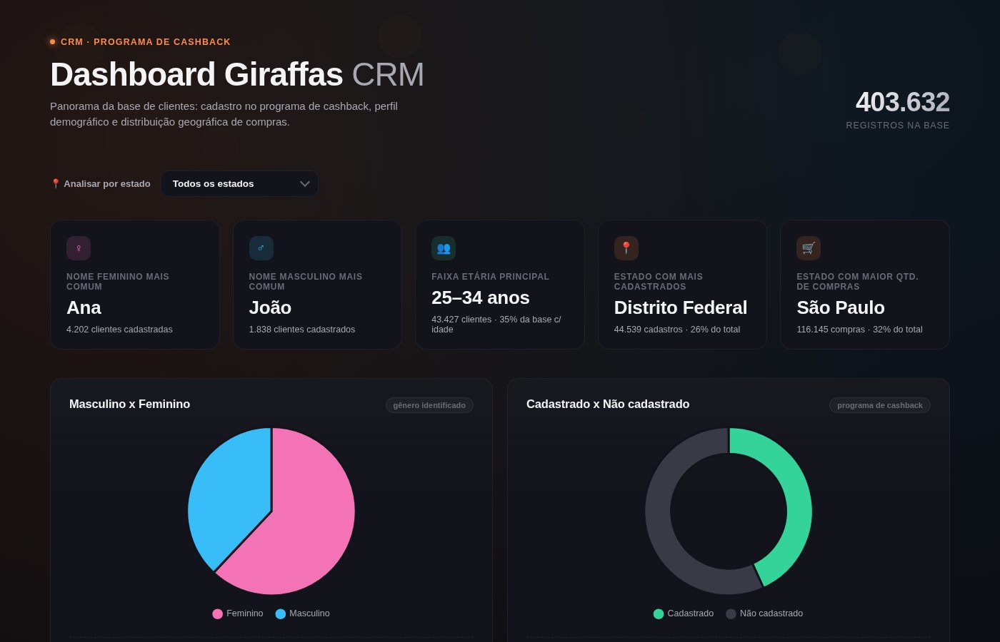
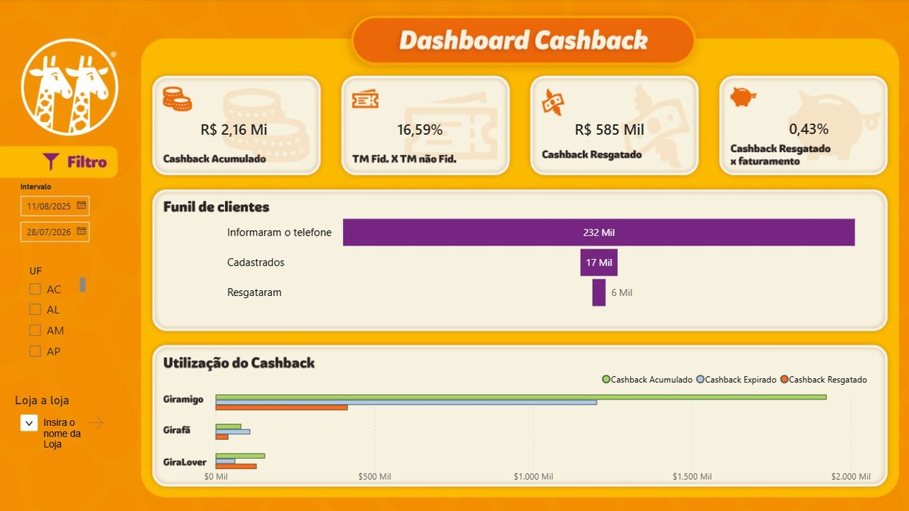
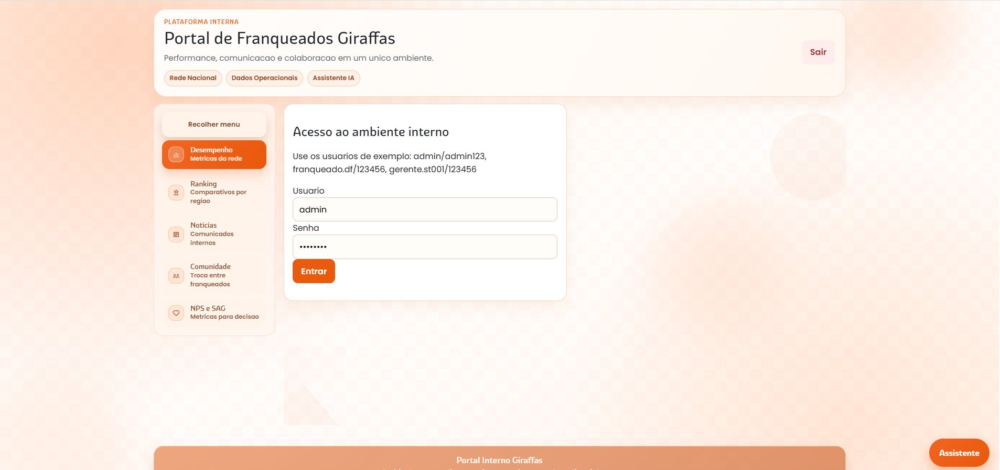

Perfil profissional · Brasília, DF (presencial e remoto) Professional profile · Brasília, Brazil (in-person and remote)
Jorge Vinícius Corrêa
Analista de Dados & BI — Marketing Analytics Data Analyst & BI — Marketing Analytics
Transformo dados brutos em decisões de marketing e negócio. De vendas e mercado financeiro a dados — hoje aplico SQL Server, Python e Power BI numa rede nacional de fast-food, do dado bruto ao dashboard que a diretoria realmente usa. I turn raw data into marketing and business decisions. From sales and finance to data — today I apply SQL Server, Python and Power BI at a national fast-food chain, from raw data to the dashboard leadership actually uses.
SobreAbout
Sou analista de dados com experiência prática em decisões de marketing e negócio para uma das maiores redes de fast-food do Brasil. Uso SQL Server, Python e Power BI para construir pipelines de automação, dashboards e modelos de segmentação de clientes por machine learning (K-Means). Já entreguei um CRM sobre mais de 400 mil clientes e um dashboard de cashback que acompanha R$ 2,16 Mi em saldo acumulado.
Cheguei aos dados depois de passar por vendas, mercado financeiro e aviação civil — uma trajetória por 5 setores diferentes. Isso me deu leitura de negócio e relacionamento com stakeholders, que levo para cada análise. Sou formado em Engenharia de Produção pela UnB e tenho interesse crescente em IA aplicada, como o assistente via RAG que estou prototipando no portal de franqueados.
I'm a data analyst with hands-on experience driving marketing and business decisions for one of Brazil's largest fast-food chains. I use SQL Server, Python and Power BI to build automation pipelines, dashboards and machine-learning customer segmentation models (K-Means). I've delivered a CRM covering over 400K customers and a cashback dashboard tracking R$2.16M in accumulated balance.
I came to data after roles in sales, finance and civil aviation — a five-industry track record. That gave me a business-outcome mindset and stakeholder skills I bring into every analysis. I hold a Production Engineering degree from the University of Brasília and have a growing interest in applied AI, like the RAG-based assistant I'm prototyping in the franchisee portal.
- LocalizaçãoLocation
- Brasília, DF, Brasil
- DisponibilidadeAvailability
- Presencial (DF) e remotoIn-person (DF) and remote
- FormaçãoEducation
- Eng. de Produção — UnB (2026)Production Engineering — UnB (2026)
- IdiomasLanguages
- Português (nativo) · Inglês (avançado) · Espanhol (intermediário) · Francês (intermediário)Portuguese (native) · English (advanced) · Spanish (intermediate) · French (intermediate)
Skills
ExperiênciaExperience
- Construí um CRM interativo sobre mais de 400 mil clientes do programa de cashback (perfil demográfico, geografia, taxa de adesão), base exploratória para um modelo de segmentação por K-Means.
- Desenvolvi dashboard Power BI de cashback acompanhando R$ 2,16 Mi em saldo acumulado e o funil de adesão da rede (232 mil contatos → 17 mil cadastros → 6 mil resgates) para a diretoria de marketing.
- Construí pipelines de automação de relatórios em Python e Power BI, substituindo processos manuais, para uma rede de 400+ lojas.
- Prototipei um portal interno para franqueados (React + Python) com assistente de IA via RAG para consulta de dados de desempenho.
- Built an interactive CRM dashboard over 400K+ cashback-program customers (demographic profile, geography, enrollment rate), the exploratory base for a K-Means segmentation model.
- Developed a Power BI cashback dashboard tracking R$2.16M in accumulated balance and the network's enrollment funnel (232K contacts → 17K sign-ups → 6K redemptions) for marketing leadership.
- Built automated reporting pipelines in Python and Power BI, replacing manual processes, across a 400+ store network.
- Prototyped an internal franchisee portal (React + Python) with a RAG-based AI assistant for performance data queries.
- Automatizei processos operacionais com Python e web scraping.
- Desenvolvi planilhas e dashboards de acompanhamento gerencial.
- Automated operational processes using Python and web scraping.
- Built spreadsheets and dashboards supporting internal decision-making.
- Prospecção, conversão e relacionamento com clientes por abordagem consultiva.
- Prospecting, conversion and client relationships through a consultative sales approach.
- Liderei a equipe operacional e treinei mais de 50 assessores em novos processos automatizados.
- Led the operations team and trained 50+ financial advisors on new automated processes.
- Dashboards interativos em Power BI e formulário técnico adotado por grandes aeroportos.
- Interactive Power BI dashboards and a technical form later adopted by major airports.
- Liderança técnica em projeto de engenharia universitário.
- Technical leadership on a university engineering project.
ProjetosProjects

Painel interativo sobre 403 mil clientes do programa de cashback — perfil demográfico, distribuição geográfica (27 estados, filtro dinâmico) e taxa de adesão — como base exploratória para o modelo de segmentação (K-Means) por frequência de visita e preferência de pedido.
Interactive panel over 403k cashback program customers — demographic profile, geographic distribution (27 states, dynamic filter) and enrollment rate — as the exploratory base for the K-Means segmentation model by visit frequency and order preference.
Ver dashboard ao vivo ↗View live dashboard ↗
Dashboard Power BI com filtro de período, UF e loja, acompanhando R$ 2,16 Mi em cashback acumulado, o funil de adesão (232 mil telefones informados → 17 mil cadastros → 6 mil resgates) e o ranking de utilização por loja para a diretoria de marketing.
Power BI dashboard with date, state and store filters, tracking R$2.16M in accumulated cashback, the enrollment funnel (232k phone numbers → 17k sign-ups → 6k redemptions) and store-level usage ranking for marketing leadership.

Plataforma web em fase de protótipo (React + Python) centralizando desempenho por loja, ranking regional, comunicados e comunidade entre franqueados, com assistente de IA (RAG) para consulta de dados — integração com SQL Server ainda em andamento, hoje rodando sobre dados mock.
Prototype-stage web platform (React + Python) centralizing store-level performance, regional ranking, announcements and a franchisee community space, with an AI assistant (RAG) for data queries — SQL Server integration in progress, currently running on mock data.
Cursos & CertificaçõesCertifications & Courses
52 cursos e certificações concluídos (Alura, UnB, Hashtag Programação, Casa Thomas Jefferson, ANCORD), organizados por área: 52 completed courses and certifications (Alura, UnB, Hashtag Programação, Casa Thomas Jefferson, ANCORD), organized by area: